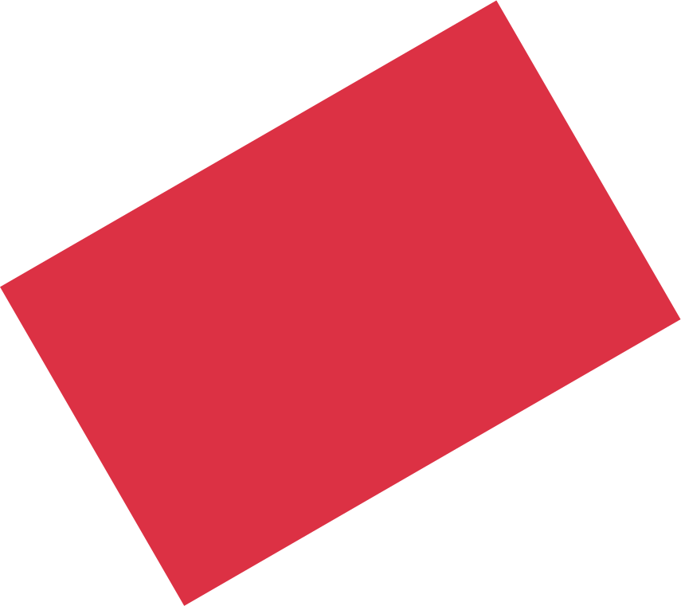
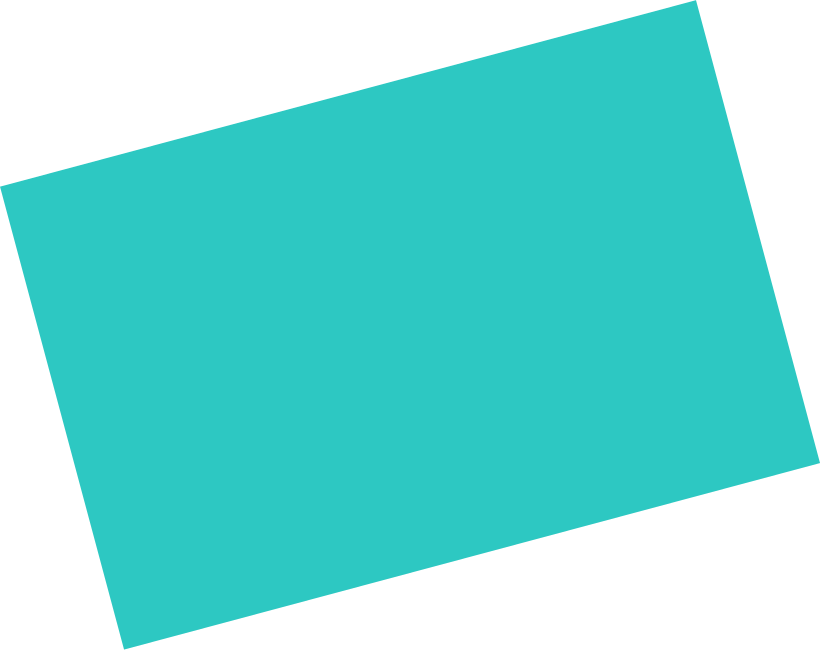
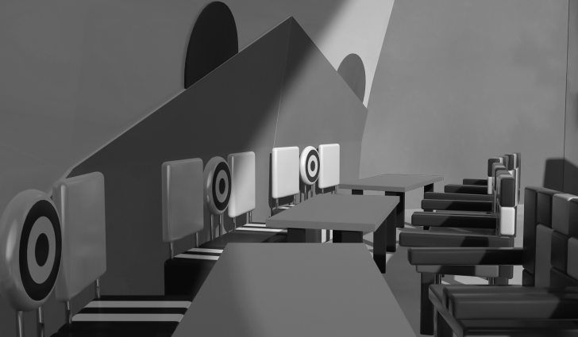

История ресторана начинается ещё в далёком XVIII веке, когда предпринимательство и цирковая деятельность в России процветали.
Молодой предприниматель граф В.В. Приклоунский в 1889 г. открыл небольшое кафе у главного цирка Санкт-Петербурга даже не подозревая, какую важную роль сыграет это место в будущем.

Для клоунов собираться после работы в кафе очень быстро стало традицией. В 1912 г., во время Большого Клоунского восстания
за права клоунов, кафе стало центром клоунского движения.




Ресторан сейчас успешно работает, принимает около 500 посетителей
в день. В ресторане постоянно обновляется меню, есть бассейн, библиотека, винный шкаф и другие уникальные зоны, которые очень помогают успокоить любого гостя.